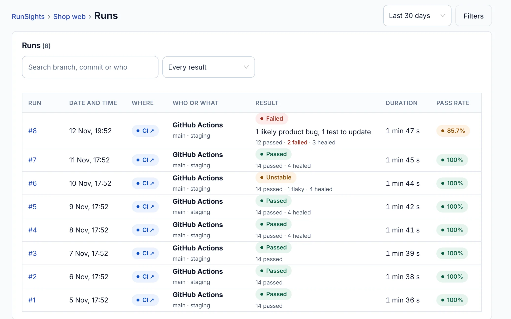
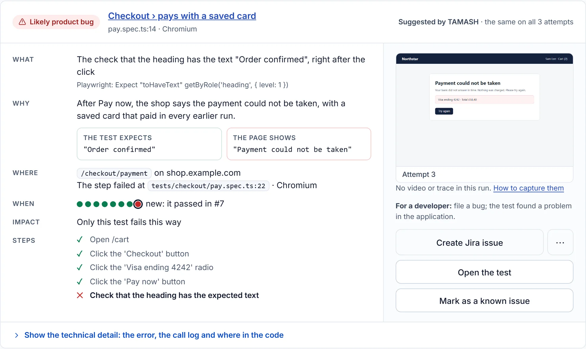

Why it failed
What the test expected, what the page showed, where in the code, and whether it passed in the run before. Each failure is marked as a likely product bug, a test to update or the setup.
 TAMASH · RunSights
TAMASH · RunSightsEvery Playwright and Cucumber run, from laptops and CI, while it runs. Each failure says whether it is likely a product bug, a test to update or a problem of the setup, with the evidence to check it.
Included with Shield. Also on its own.

A week of CI runs. The newest failed; the runs before it passed, three of them after heals.
Open a run and it says how it went, what TAMASH did, and the failures a person should look at, for developers and for testers.

What the test expected, what the page showed, where in the code, and whether it passed in the run before. Each failure is marked as a likely product bug, a test to update or the setup.
The error, the steps, the screenshot and, from CI, the trace, the video and the Playwright HTML report.
Every locator healed in the run, what it was healed to, and how far its fix has come.
The same failure across tests and runs is one group, with a likely cause. Test Health shows what newly fails, what got fixed and what is flaky; Trends and Performance show how the suite is going.
An email about a CI run with new failures, and the results as a comment on its pull request, when you want them.

A signed-in machine sends its runs under the person's name, and the report of the latest run opens on the machine. An organization can choose to collect CI runs only.
One secret, a service token of the project. The run links back to the job that made it, with its evidence. Pipelines lists the CI runs of the repository, and lets you start, rerun or cancel them.
Heals are part of each run. With Forge, runs of tests linked to test cases count toward their cycles.
One reporter line in playwright.config, added by init. Your other reporters stay.
A formatter in the profile. Each scenario is a test, and the Playwright calls of each step are listed.
GitHub Actions, Azure DevOps, GitLab CI, Jenkins and others: the same secret, and the run links back to its job.